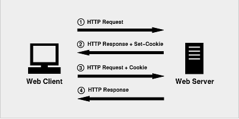

cookie、session、token
session，cookie和token究竟是什么
简述
cookie，session，token作为面试必问题，很多同学能答个大概，但是又迷糊不清，希望本篇文章对大家有所帮助
http是一个无状态协议
什么是无状态呢？就是说这一次请求和上一次请求是没有任何关系的，互不认识的，没有关联的。这种无状态的的好处是快速。
cookie和session
由于http的无状态性，为了使某个域名下的所有网页能够共享某些数据，session和cookie出现了。客户端访问服务器的流程如下
首先，客户端会发送一个http请求到服务器端。
服务器端接受客户端请求后，建立一个session，并发送一个http响应到客户端，这个响应头，其中就包含Set-Cookie头部。该头部包含了sessionId。Set-Cookie格式如下，具体请看Cookie详解
Set-Cookie: value[; expires=date][; domain=domain][; path=path][; secure]在客户端发起的第二次请求，假如服务器给了set-Cookie，浏览器会自动在请求头中添加cookie
服务器接收请求，分解cookie，验证信息，核对成功后返回response给客户端

注意
- cookie只是实现session的其中一种方案。虽然是最常用的，但并不是唯一的方法。禁用cookie后还有其他方法存储，比如放在url中
- 现在大多都是Session + Cookie，但是只用session不用cookie，或是只用cookie，不用session在理论上都可以保持会话状态。可是实际中因为多种原因，一般不会单独使用
- 用session只需要在客户端保存一个id，实际上大量数据都是保存在服务端。如果全部用cookie，数据量大的时候客户端是没有那么多空间的。
- 如果只用cookie不用session，那么账户信息全部保存在客户端，一旦被劫持，全部信息都会泄露。并且客户端数据量变大，网络传输的数据量也会变大
cookie和session通俗小结
简而言之, session 有如用户信息档案表, 里面包含了用户的认证信息和登录状态等信息. 而 cookie 就是用户通行证
token定义
token 也称作令牌，由uid+time+sign[+固定参数]
token 的认证方式类似于临时的证书签名, 并且是一种服务端无状态的认证方式, 非常适合于 REST API 的场景. 所谓无状态就是服务端并不会保存身份认证相关的数据。
token组成
- uid: 用户唯一身份标识
- time: 当前时间的时间戳
- sign: 签名, 使用 hash/encrypt 压缩成定长的十六进制字符串，以防止第三方恶意拼接
- 固定参数(可选): 将一些常用的固定参数加入到 token 中是为了避免重复查库
存放
token在客户端一般存放于localStorage，cookie，或sessionStorage中。在服务器一般存于数据库中
token认证流程
token 的认证流程与cookie很相似
- 用户登录，成功后服务器返回Token给客户端。
- 客户端收到数据后保存在客户端
- 客户端再次访问服务器，将token放入headers中
- 服务器端采用filter过滤器校验。校验成功则返回请求数据，校验失败则返回错误码
token可以抵抗csrf，cookie+session不行
因为form 发起的 POST 请求并不受到浏览器同源策略的限制，因此可以任意地使用其他域的 Cookie 向其他域发送 POST 请求，形成 CSRF 攻击。在post请求的瞬间，cookie会被浏览器自动添加到请求头中。但token不同，token是开发者为了防范csrf而特别设计的令牌，浏览器不会自动添加到headers里，攻击者也无法访问用户的token，所以提交的表单无法通过服务器过滤，也就无法形成攻击。
分布式情况下的session和token
我们已经知道session是有状态的，一般存于服务器内存或硬盘中，当服务器采用分布式或集群时，session就会面对负载均衡问题。
- 负载均衡多服务器的情况，不好确认当前用户是否登录，因为多服务器不共享session。这个问题也可以将session存在一个服务器中来解决，但是就不能完全达到负载均衡的效果。当今的几种解决session负载均衡的方法。
而token是无状态的，token字符串里就保存了所有的用户信息
- 客户端登陆传递信息给服务端，服务端收到后把用户信息加密（token）传给客户端，客户端将token存放于localStroage等容器中。客户端每次访问都传递token，服务端解密token，就知道这个用户是谁了。通过cpu加解密，服务端就不需要存储session占用存储空间，就很好的解决负载均衡多服务器的问题了。这个方法叫做JWT(Json Web Token)
总结
- session存储于服务器，可以理解为一个状态列表，拥有一个唯一识别符号sessionId，通常存放于cookie中。服务器收到cookie后解析出sessionId，再去session列表中查找，才能找到相应session。依赖cookie
- cookie类似一个令牌，装有sessionId，存储在客户端，浏览器通常会自动添加。
- token也类似一个令牌，无状态，用户信息都被加密到token中，服务器收到token后解密就可知道是哪个用户。需要开发者手动添加。
- jwt只是一个跨域认证的方案
补充:JWT
JWT就是token的一种实现方式，并且基本是java web领域的事实标准。
JWT全称是JSON Web Token。基本可以看出是使用JSON格式传输token
JWT 由 3 部分构成:
Header :描述 JWT 的元数据。定义了生成签名的算法以及 Token 的类型。Payload（负载）:用来存放实际需要传递的数据Signature（签名）：服务器通过Payload、Header和一个密钥(secret)使用 Header 里面指定的签名算法（默认是 HMAC SHA256）生成。流程：
在基于 Token 进行身份验证的的应用程序中，用户登录时，服务器通过Payload、Header和一个密钥(secret)创建令牌（Token）并将 Token 发送给客户端，
然后客户端将 Token 保存在 Cookie 或者 localStorage 里面，以后客户端发出的所有请求都会携带这个令牌。你可以把它放在 Cookie 里面自动发送，但是这样不能跨域，所以更好的做法是放在 HTTP Header 的 Authorization字段中：Authorization: 你的Token。